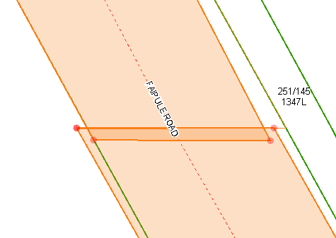
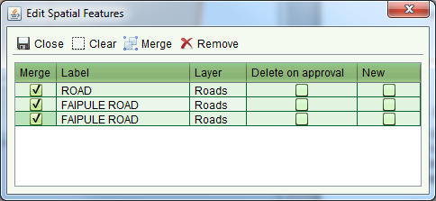
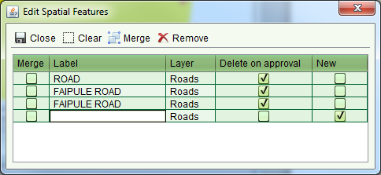

Merging Road and Hydro Parcels
If you have two or more road and/or hydro parcels that need to be merged into one, you can
use the Merge feature of the Edit Spatial Feature screen from
either the Record Plan service or the Change Map service.
Merge feature of the Edit Spatial Feature screen from
either the Record Plan service or the Change Map service.
Steps
-
-
Select the features to merge using the
 Select Spatial Feature tool. In order to merge features,
they must all exist in the same layer (Roads or Hydro Features) and they must also
overlap. If the features do not overlap, use the
Select Spatial Feature tool. In order to merge features,
they must all exist in the same layer (Roads or Hydro Features) and they must also
overlap. If the features do not overlap, use the Edit Spatial Feature Tool to move the
node points to create an artificial overlap.
Edit Spatial Feature Tool to move the
node points to create an artificial overlap.

Road parcels that have been manually overlapped
-
-
Click the
 Edit Spatial Feature Details tool and check indicate
the features that must be merged by checking the Merge checkbox beside each feature
Edit Spatial Feature Details tool and check indicate
the features that must be merged by checking the Merge checkbox beside each feature

Select Features to Merge
-
-
Click theMerge button. This will
create a new feature based on the merged result of the selected features and the Edit
Spatial Features screen will be updated to show the new feature. The features selected
for merge will also be automatically flagged with Delete on approval.

Post Merge
-
-
If appropriate, manually enter the Label for the new merged feature.
-
The new merged feature will not be displayed to other users until the application is
approved, so proceed with completing the service and approving the application.
The Merge does not support merging Road Centerlines. If you need to create a single road
centerline from multiple existing centerlines, use theAdd New Road Centerline tool to create a new
centerline based on the centerlines that are being replaced. You also need to flag each of
the centerlines being replaced with Delete on Approval in the Edit Spatial Features screen.
This will ensure the original centerlines are removed from the map once the application is
approved.